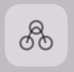
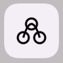
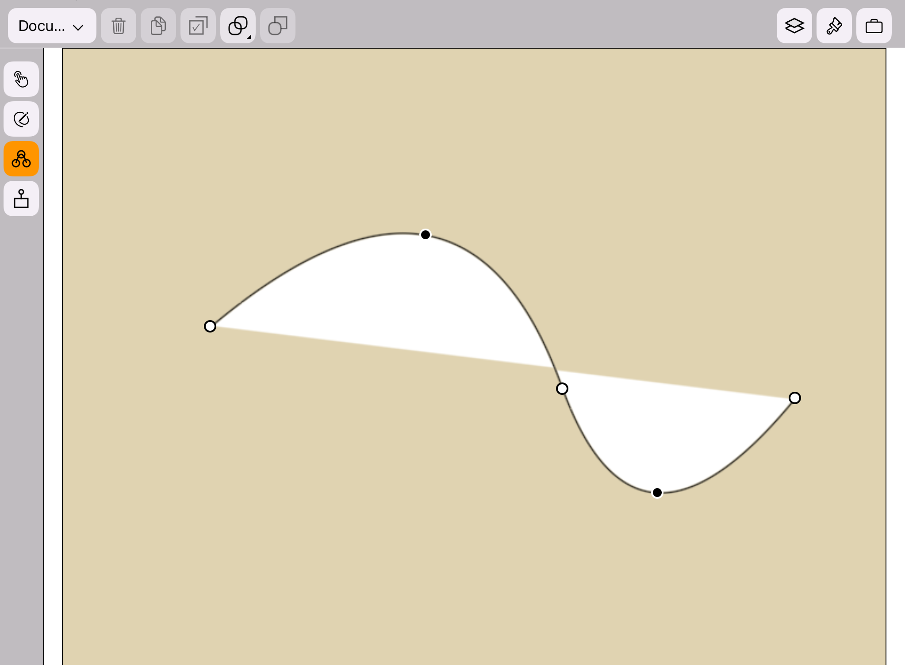

Turn on the Modify Mode
App Version: 1.07
When no drawing layer is selected, the modify icon

is disabled.
When a drawing layer is selected, the modify icon

is enabled.
When the modify icon is enabled, single tap the modify icon
can toggle the modify mode on and off.
When the modify mode is on:
The background color of the modify icon is orange.
The controls points(including both end points
and non-end points) would appear at the border
of the target drawing, as shown in the figure below.
